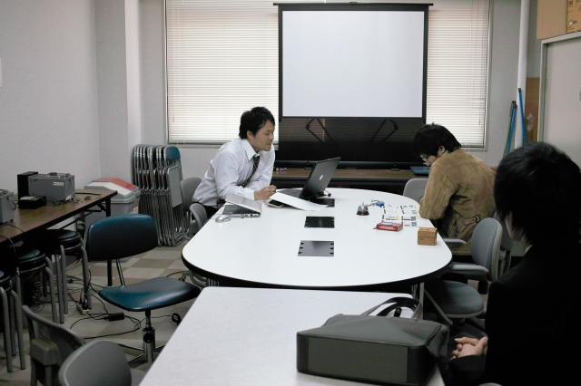
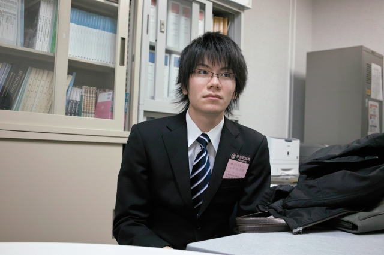
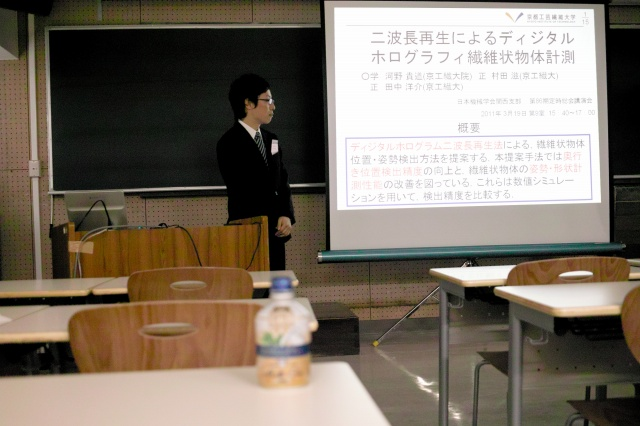
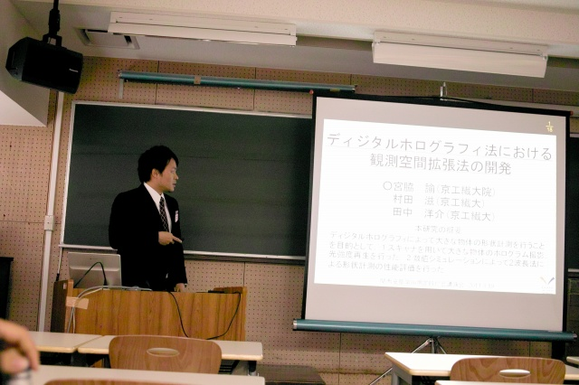
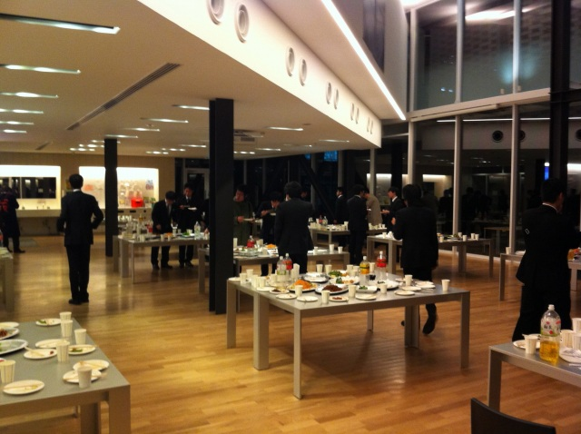
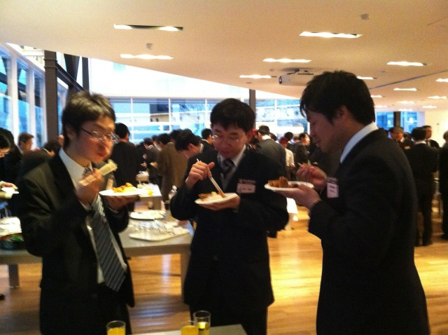
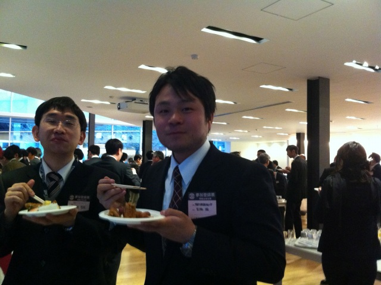

| ・（社）日本機械学会関西支部 第86期定時総会講演会＠京都工芸繊維大学 (H23.03.19) | |||
去年は1人発表でしたが、今年はK野くん、M脇くん、そしてY名田くんの3人発表でした。Y名田くんは写真担当で本人の発表中の写真が無いです。運営委員で教員が居なくても、3人は数々の学会で磨いたプレゼンテクニックで納得のいくプレゼンができました。 |
|||
|
流石準備にぬかりない |

M里くんの辛口コメント | ||
|

K城くん初登場。4月からウチに合流。 |

K野くんも慣れたモノ | ||
|

ベテランM脇くん |

今日は150人くらいです＠助教の人 | ||
|

お疲れな3人 |

食べてる時の笑顔が良いM脇くん | ||